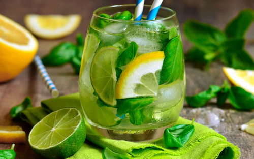

Basil Lemonade

Description
Basil lemonade is a refreshing and healthy twist on traditional lemonade. By blending fresh basil
leaves with lemon juice, ice, and a touch of natural sweetener, you get a vibrant drink that's both
therapeutic and delicious. This beverage can be made instantly using a high-powered blender and served
immediately.
Basil is a highly beneficial herb, known for its antibacterial and anti-inflammatory properties. It also
provides flavonoids like orientin and vicenin, which protect cells and DNA from oxidative stress.
Additionally,
basil is a good source of magnesium, supporting cardiovascular health. Enjoy this drink as a tasty way
to
include herbs in your diet.
Ingredients (1 serving)
- 3 cups ice cubes
- Juice of 4 limes or lemons
- 3 teaspoons raw blue agave syrup or coconut syrup
- A handful of fresh basil leaves
Steps
- Place the ice cubes, lime or lemon juice, syrup, and fresh basil leaves into a high-powered blender.
- If your blender has preset programs, select the “Smoothies” program. Use the tamper to push
ingredients
toward the blades until the program completes.
- For any blender model: start at low speed, gradually increase to maximum, and blend for about 1
minute, or
until smooth and frothy without lumps, using the tamper if needed.
- Pour into a glass and serve immediately. Garnish with a sprig of basil if desired.